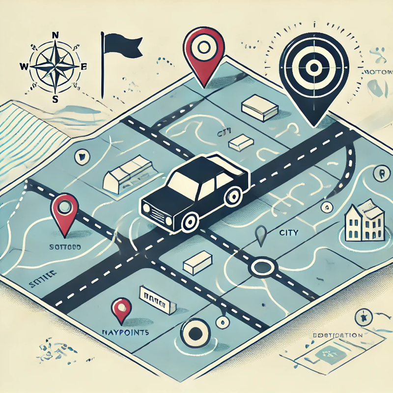
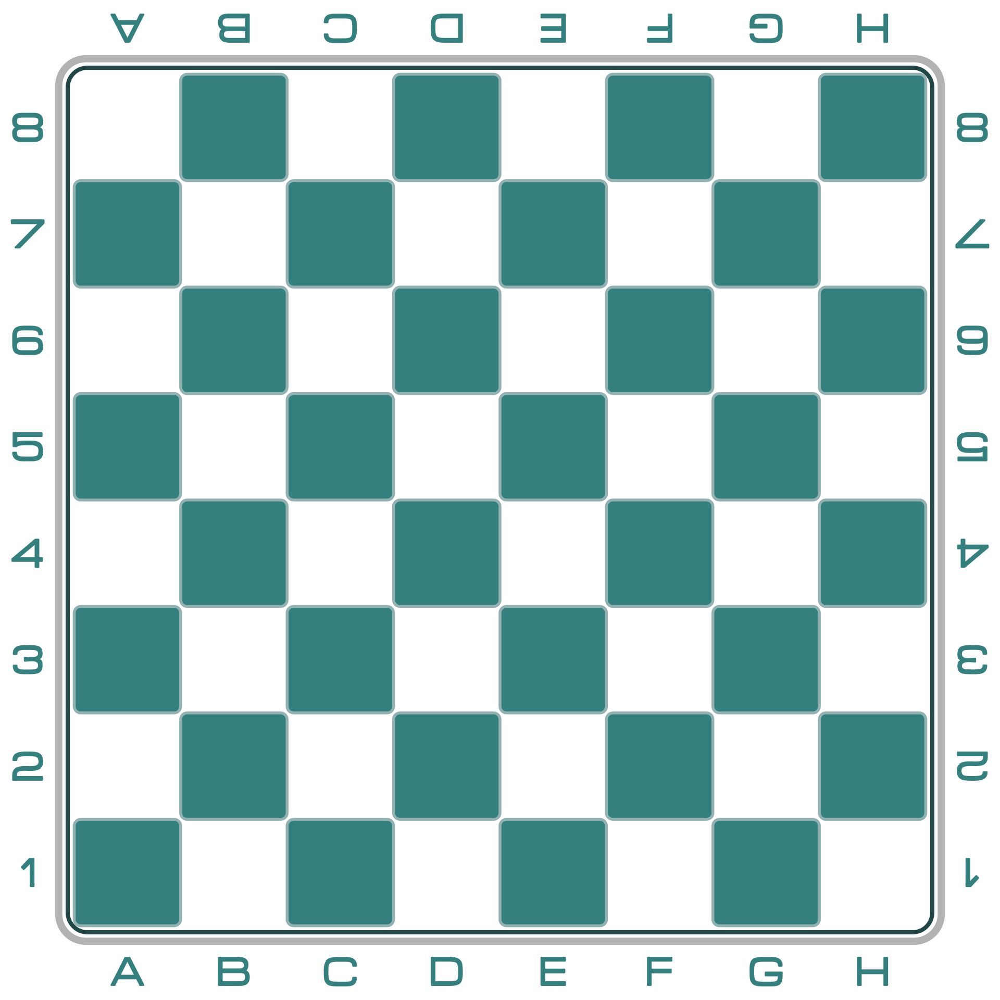

CS 463G & CS 663
(Intro to) AI
Lecture 4: Introduction to Search
Fall 2026
Classical AI
AI = Representation + Search
- Describe the problem.
- Choose a useful abstraction for partial solutions.
- Define operations that change the representation.
- Search through those changes until a solution is found.
Representation defines the world the agent can think in; search decides how it moves through that world.

What Is Search?
- Search is the process of finding a solution or path in a problem space.
- It is useful when an agent must reason through possible future states before acting.

Pathfinding

Game playing

Puzzle solving
Example: Vacuum-Cleaner World

- State count: 2 \times 2 \times 2 = 8.
- Vacuum location: Room A or Room B.
- Room A: clean or dirty.
- Room B: clean or dirty.
- Actions: L, R, S.
- Goal: both rooms are clean.
Vacuum State Space

Vacuum-cleaner state space
Fig. 3.2 of AIMA: states are nodes; actions are edges.
Example: 8 Puzzle
- A sliding puzzle with 8 numbered tiles and one empty space.
- Objective: arrange the tiles in a target order.
- States: all tile configurations.
- Actions: slide a neighboring tile into the empty space.
Fig. 3.3 of AIMA.
Example: Eight Queens
- Place 8 queens on an 8 \times 8 chessboard.
- No two queens may share a row, column, or diagonal.
- A search formulation must decide what counts as a state and what counts as an action.